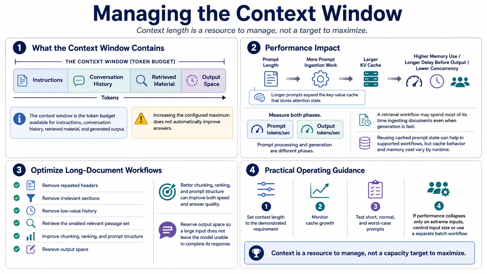

Context Window and Prompt Processing
Connecting to LMS... Progress: in progress

Narration
The context window is the token budget available for instructions, conversation history, retrieved material, and generated output. Increasing the configured maximum does not automatically improve answers. Longer prompts require more prompt ingestion work and expand the key-value cache that stores attention state. The result can be higher memory use, a longer delay before output, and less capacity for concurrency.
Prompt processing and generation are different phases. Measure prompt tokens per second as well as output tokens per second. A retrieval workflow may spend most of its time ingesting documents even when generation is fast. Reusing cached prompt state can help in supported workflows, but cache behavior and memory cost vary by runtime.
For long documents, remove repeated headers, irrelevant sections, and low-value history before sending text to the model. Retrieval-augmented generation should select the smallest set of relevant passages rather than filling the entire context by default. Better chunking, ranking, and prompt structure can improve both speed and answer quality. Reserve output space so a large input does not leave the model unable to complete its response.
Set context length to the demonstrated requirement and monitor cache growth. Test short, normal, and worst-case prompts. If performance collapses only on extreme inputs, control input size or use a separate batch workflow instead of penalizing every interactive request. Context is a resource to manage, not a capacity target to maximize.